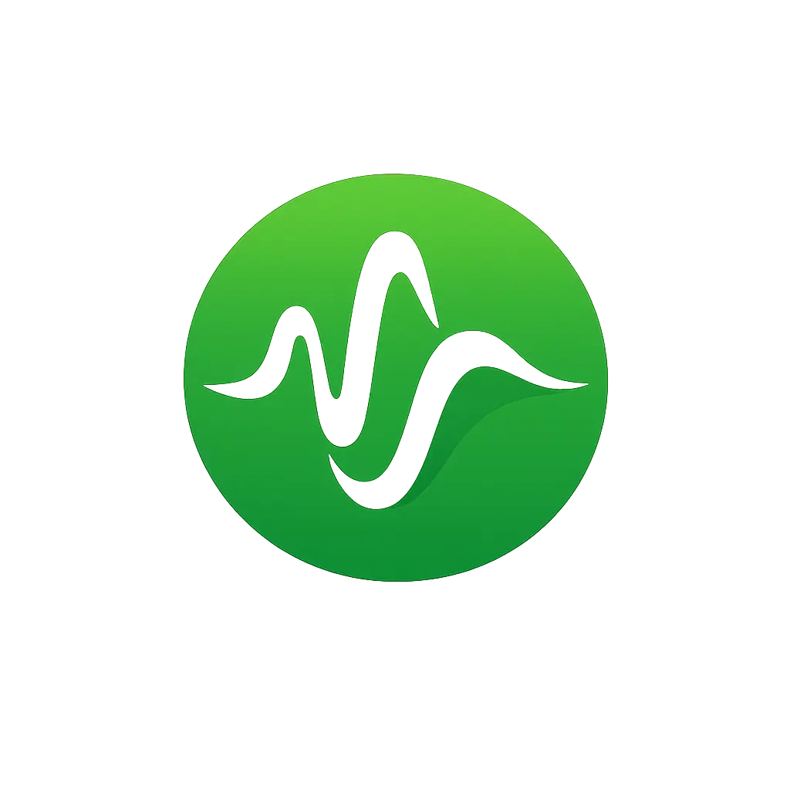

Spotifie for Android
SHA-256 checksum
Android APK — direct installation. Your browser may ask permission to install apps from this source.
Download APK
Spotifie
Music for everyone
Spotifie for Android
Android APK — direct installation. Your browser may ask permission to install apps from this source.
Download APK